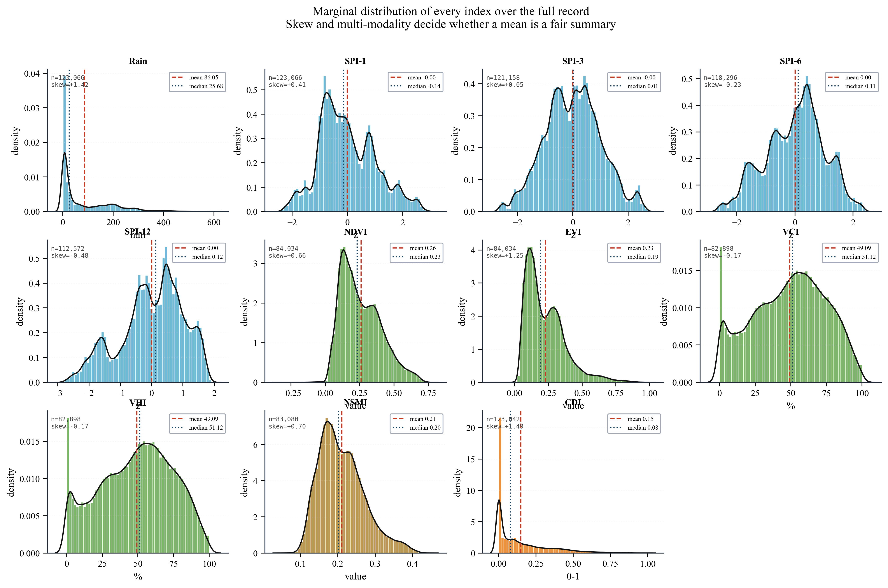
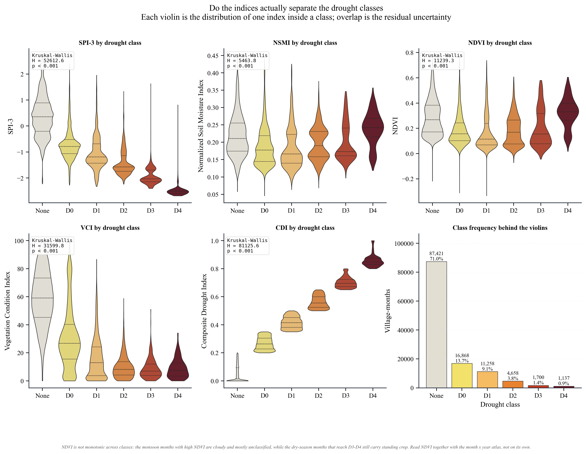
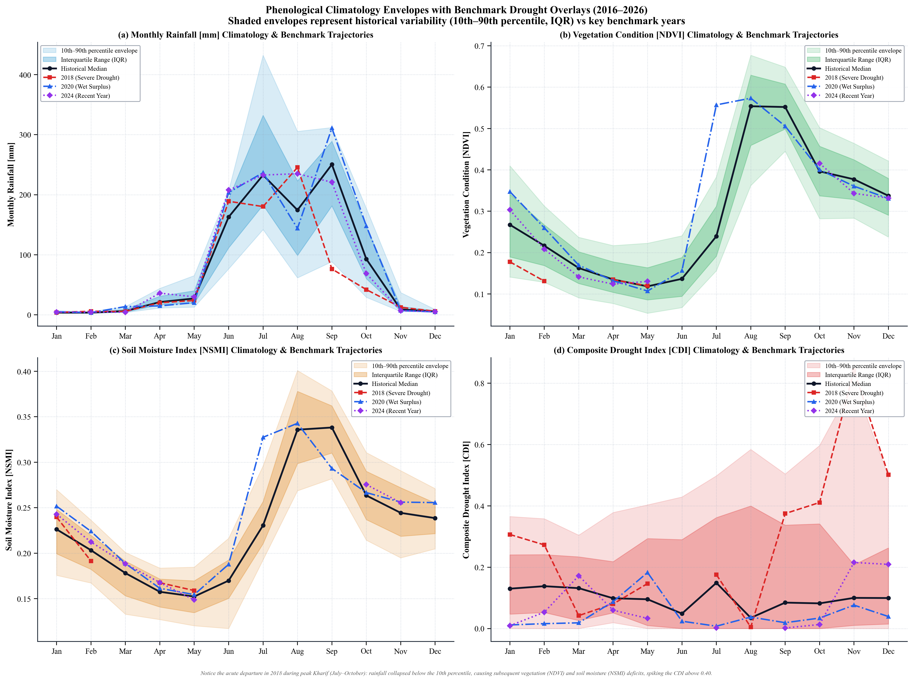
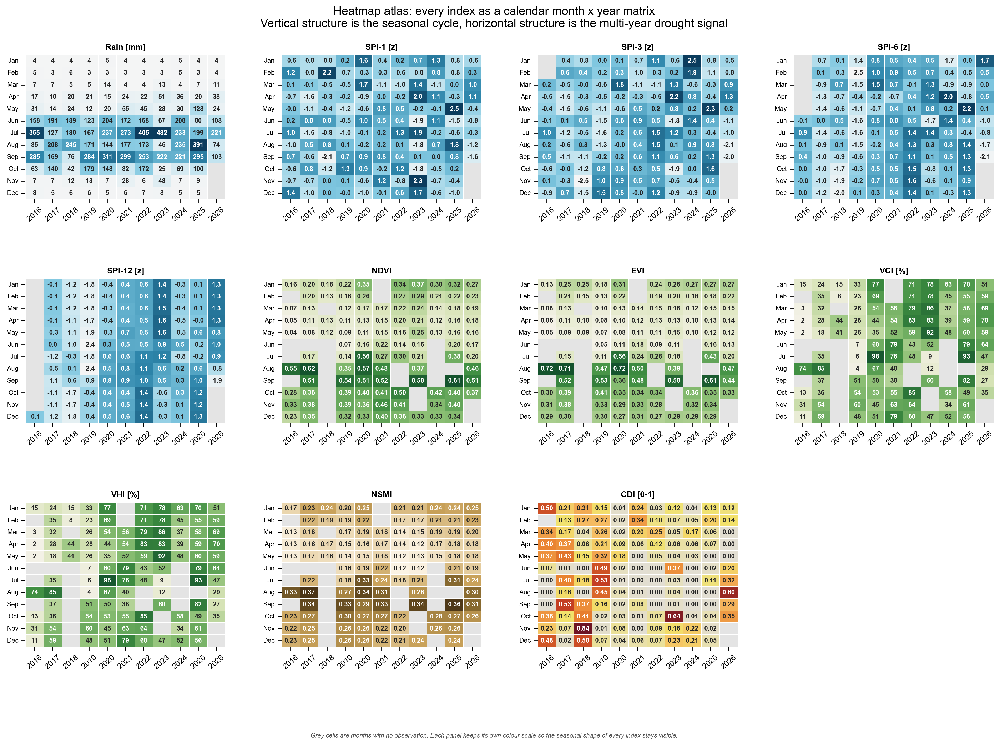

Drought Indices Encyclopedia¶
This encyclopedia documents every biophysical and meteorological drought index computed, calibrated, and monitored within the Latur district system across 954 revenue villages.
1. Summary of Monitored Indicators¶
| Index Symbol | Full Formal Name | Physical Domain | Primary Sensor Source | Baseline / Scale |
|---|---|---|---|---|
| NDVI | Normalized Difference Vegetation Index | Canopy Greenness & Biomass | Sentinel-2 MSI (B4, B8) | \(-1.0 \text{ to } +1.0\) |
| EVI | Enhanced Vegetation Index | Atmospheric & Soil Adjusted Canopy | Sentinel-2 MSI (B2, B4, B8) | \(-1.0 \text{ to } +1.0\) |
| VCI | Vegetation Condition Index | Relative Phenological Anomaly | Sentinel-2 MSI Baseline | \(0.0 \text{ to } 100.0\%\) |
| TCI | Temperature Condition Index | Thermal Evaporative Stress | Landsat 8/9 TIRS (Band 10) | \(0.0 \text{ to } 100.0\%\) |
| SMI / NSMI | Soil Moisture Index (Normalized) | Root-Zone Water Permittivity | Sentinel-1 SAR (VV/VH) | \(0.0 \text{ to } 1.0\) |
| VHI | Vegetation Health Index | Joint Vegetative & Thermal Stress | Dual Optical-Thermal | \(0.0 \text{ to } 100.0\%\) |
| SPI-1 | 1-Month Standardized Precipitation Index | Flash Meteorological Drought | UCSB CHIRPS v2.0 | \(-\infty \text{ to } +\infty\) |
| SPI-3 | 3-Month Standardized Precipitation Index | Seasonal Kharif/Rabi Moisture | UCSB CHIRPS v2.0 | \(-\infty \text{ to } +\infty\) |
| SPI-6 | 6-Month Standardized Precipitation Index | Medium-Term Agricultural Water | UCSB CHIRPS v2.0 | \(-\infty \text{ to } +\infty\) |
| SPI-12 | 12-Month Standardized Precipitation Index | Hydrological & Storage Deficit | UCSB CHIRPS v2.0 | \(-\infty \text{ to } +\infty\) |
| CDI | Composite Drought Index | Multi-Index Integrated Risk | Multi-Sensor Synthesis | \(0.0 \text{ to } 1.0\) |
2. Statistical Distributions Across Drought Classes¶
The empirical separation of each biophysical index across USDM drought severity tiers confirms clear multi-sensor sensitivity:


3. Mathematical Specifications & Biophysical Formulations¶
3.1 Normalized Difference Vegetation Index (NDVI)¶
NDVI quantifies photosynthetic absorption of red light (\(665\text{ nm}\), Sentinel-2 Band 4) and mesophyll scattering of near-infrared (\(842\text{ nm}\), Sentinel-2 Band 8):
- Ecological Calibrations in Latur Vertisols:
- Water bodies & wetlands: \(< 0.0\)
- Fallow / bare soil (pre-monsoon April–May): \(0.10\text{--}0.18\)
- Early Kharif emergence (July): \(0.20\text{--}0.28\)
- Peak Kharif soybean/pulses canopy (August–September): \(0.35\text{--}0.65\)
- Post-monsoon Rabi crop / senescence (October–December): \(0.25\text{--}0.38\)
3.2 Enhanced Vegetation Index (EVI)¶
In dense agricultural canopies, NDVI approaches saturation. EVI incorporates the blue band (\(\rho_{\text{Blue}}\), \(490\text{ nm}\), Sentinel-2 Band 2) to correct for atmospheric aerosol scattering and soil background reflectance:
where \(G = 2.5\), \(C_1 = 6.0\), \(C_2 = 7.5\), and \(L = 1.0\).
3.3 Vegetation Condition Index (VCI)¶
Raw NDVI cannot be compared directly between distinct geographical zones (e.g., irrigated canals in Latur tehsil vs rainfed stony soils in Jalkot). VCI decouples climate-induced vegetation stress from the local ecological baseline by evaluating current NDVI relative to its historical extremes for that specific calendar month (\(m\)):
- \(\text{VCI} \ge 60\%\): Optimal canopy health / favorable conditions.
- \(40\% \le \text{VCI} < 60\%\): Normal vegetative development.
- \(30\% \le \text{VCI} < 40\%\): Mild to moderate vegetative stress.
- \(20\% \le \text{VCI} < 30\%\): Severe agricultural drought.
- \(\text{VCI} < 20\%\): Extreme agricultural crisis / extensive crop failure.
3.4 Temperature Condition Index (TCI)¶
TCI is derived from Top-of-Atmosphere (TOA) and surface-calibrated thermal radiance measured by Landsat 8/9 Thermal Infrared Sensor (TIRS Band 10, \(10.60\text{--}11.19\ \mu\text{m}\)). Under water stress, vegetation closes stomata to conserve water, reducing latent heat flux (evaporative cooling) and dramatically elevating surface skin temperature. TCI inverts this relationship:
High temperatures produce low TCI values, indicating severe thermal stress.
3.5 Vegetation Health Index (VHI)¶
Vegetation Health Index integrates vegetative condition (VCI) and thermal evaporative stress (TCI) into a joint biophysical index:
where \(\alpha = 0.5\) represents equal biophysical weighting between moisture stress and thermal elevation.
3.6 Synthetic Aperture Radar Soil Moisture (SMI / NSMI)¶
From Sentinel-1 C-band (\(5.405\text{ GHz}\)) dual-polarization (\(\sigma^\circ_{\text{VV}}\), \(\sigma^\circ_{\text{VH}}\)) radar backscatter, relative surface soil moisture is calculated by normalising backscatter against dry and saturated reference baselines:
For cross-index consistency, Normalized Soil Moisture Index (\(\text{NSMI}\)) is scaled onto \([0.0, 1.0]\):
Because SAR microwaves penetrate cloud cover and precipitation, NSMI provides all-weather monitoring during monsoon months (June–August).
3.7 Standardized Precipitation Index (SPI-1, SPI-3, SPI-6, SPI-12)¶
Precipitation from UCSB CHIRPS v2.0 (\(0.05^\circ\) grid, daily blended satellite-gauge) is aggregated across rolling windows:
- SPI-1 (30 days): Detects sudden meteorological dry spells and flash droughts during sowing.
- SPI-3 (90 days): Primary agricultural metric reflecting full Kharif or Rabi rainfall balance.
- SPI-6 (180 days): Captures seasonal transition and soil reservoir replenishment.
- SPI-12 (365 days): Reflects long-term groundwater recharge, reservoir levels, and multi-season hydrological drought.
Cumulative precipitation is fitted to a 2-parameter Gamma distribution \(g(x; \alpha, \beta)\) and transformed to standard normal \(Z \sim \mathcal{N}(0, 1)\).
3.8 Composite Drought Index (CDI)¶
CDI integrates meteorological deficit (SPI), vegetation condition (VCI), soil moisture (NSMI), and thermal state (TCI) into a single composite:
where \(S(I)\) is the normalized severity score (\(0.0 \le S \le 1.0\), where \(1.0\) is extreme drought) for index \(I\).
4. Seasonal Phenological Cycles¶
The 11-year seasonal violin plots show the phenological timing of moisture, vegetative vigor, and drought onset:


5. Drought Class Thresholds (USDM / WMO Parity)¶
| Drought Code | Severity Category | CDI Threshold | SPI-3 Threshold | VCI Threshold | Agricultural Impact Description |
|---|---|---|---|---|---|
| None | Normal / Wet | \(< 0.15\) | \(> -0.50\) | \(\ge 50\%\) | Optimal crop growth; adequate soil moisture. |
| D0 | Abnormally Dry | \(0.15 \le \text{CDI} < 0.25\) | \(-0.80 \le \text{SPI} < -0.50\) | \(40\text{--}50\%\) | Minor soil moisture deficit; sowing delays. |
| D1 | Moderate Drought | \(0.25 \le \text{CDI} < 0.35\) | \(-1.20 \le \text{SPI} < -0.80\) | \(30\text{--}40\%\) | Visible crop wilting; stunted vegetative growth. |
| D2 | Severe Drought | \(0.35 \le \text{CDI} < 0.50\) | \(-1.60 \le \text{SPI} < -1.20\) | \(20\text{--}30\%\) | Significant yield loss; fodder scarcity; water stress. |
| D3 | Extreme Drought | \(0.50 \le \text{CDI} < 0.70\) | \(-2.00 \le \text{SPI} < -1.60\) | \(10\text{--}20\%\) | Extensive crop failure; acute livestock distress. |
| D4 | Exceptional Drought | \(\ge 0.70\) | \(\le -2.00\) | \(< 10\%\) | Catastrophic crisis; emergency water rationing. |